MySQL-notes
第3章 使用MySQL
安装以及导入数据
- 参考：《mysql必知必会》 下载_《 MySQL必知必会 》下载 以及 Ubuntu16.04 下配置其使用的软件环境…_臧竹萌1111的博客-CSDN博客
- sql - MySQL: SyntaxError: Unexpected identifier - Stack Overflow
连接
选择数据库
使用关键字
USE database_name来使用一个数据库:
了解数据库和表
使用
SHOW DATABASES，返回一个数据库的列表
使用
SHOW TABLES，获取一个数据库内的所有table的列表使用
SHOW COLUMNS展示表列信息
第4章 检索数据
- 为了使用
SELECT检索table数据，至少提供两条信息：- 选择的attribute；
- From where
检索单个列
- 如果没有明确排序查询的结果，则返回的数据的顺序没有特殊意义。
- 多条SQL语句必须使用分号
;分隔。- 如果使用的是mysql命令行，必须加上分号来结束SQL语句
- SQL语句不区分大小写。
SELECT、select和Select都是相同的。- 对所有的SQL关键字使用大写，对所有的列和表明使用小写。
- 方便代码阅读和调试
- 处理SQL语句的时候，其所有的空格都被忽略。
- 将SQL语句分成多行更容易阅读和调试。
检索多个列
使用
SELECT关键字后给出多个列名，列名之间必须以逗号,分隔。- 需要注意列名之间加上逗号，但是最后一个列名不加。
- SQL语句一般返回原始的、无格式的数据。
- 数据的格式化是一个表示问题，不是检索问题。
检索所有列
使用
*通配符
- 列的顺序一般是列在表定义中出现的顺序。
- 一般，除非确实需要表中的每个列，否则最好不要使用
*通配符。- 检索不需要的列通常会降低检索和应用程序的性能。
- 使用通配符可以检索出名字未知的列。
检索不同的行
使用
DISTINCT关键字，去除duplicate。
限制结果
使用
LIMIT子句，限定返回第一行或前几行。
使用
LIMIT n, m，返回第n行起的共m行。检索出来的第一行为行0，而不是行1。
LIMIT 1,1检索出来的结果是第二行。
如果没有足够的行，MySQL只返回它能返回的那么多行。
使用完全限定的表名
可以使用完全限定的名字来引用列。
同时使用表名和列。
表名也可以使用数据库名来进行限定。
同时使用数据库名和表名。
- 存在一些情形需要使用完全限定名。
第5章 排序检索数据
排序数据
- 检索出的数据并不是以纯粹的随机顺序显示。
- 如果不排序，数据一般将以在底层table中出现的顺序显示。
- 如果不明确控制，不能（也不应该）依赖该排序顺序。
- 使用
ORDER BY子句，来明确排序SELECT子句检索出的数据。ORDER BY子句取一个或多个列的名字，据此对输出进行排序。
使用非检索的列排序数据是完全合法的。
按多个列排序
为了按多个列排序，只要指定列名，列名之间用逗号分开即可。
- 类似选择（SELECT）多个列一样。
- 按多个列排序时，排序完全按所规定的顺序进行。
- 如，对于上述例子中的输出，仅在多个行具有相同的
prod_price值时才对产品按prod_name进行排序。 - 。如果
prod_price列中所有的值都是唯一的，则不会对prod_name进行排序。
- 如，对于上述例子中的输出，仅在多个行具有相同的
指定排序方向
默认的排序方向是升序（A~Z）。
可以使用
ORDER BY子句以降序（Z~A）顺序排序，通过指定DESC关键字来实现。
对多个列进行排序的时候，
DESC关键字只应用到直接位于其前面的列名。
- 如果相对多个列进行降序排序，必须对每个列指定
DESC关键字。
- 使用
ASC关键字指定升序排序，但是默认就是升序排序，所以不用指定。
- 在字典（dictionary）排序顺序中，A被视为与a相同，这是MySQL（和大多数数据库管理系统）的默认行为。
- 但是，许多数据库管理员能够在需要时改变这种行为（如果你的数据库包含大量外语字符，可能必须这样做）。
使用
ORDER BY和LIMIT的组合，可以找出一个列中最高或最低的值。ORDER BY子句必须是SELECT语句中的最后一条子句。
第6章 过滤数据
使用WHERE 子句
在
SELECT语句中，数据根据WHERE子句中指定的条件进行过滤。WHERE子句在表名（FROM子句）之后给出。
同时使用
ORDER BY和WHERE子句时，应该让ORDER BY位于WHERE之后。
WHERE子句操作符
MySQL支持的所有条件操作符。
检查单个值
单引号用来限定字符串。
- 如果将值与字符串类型的列进行比较的时候，需要限定引号。
- 数值不需要。
- MySQL默认在执行匹配的时候不区分大小写。
不匹配检查
使用
<>或!=来进行不匹配检查
范围值检查
使用
BETWEEN操作符，检查某个范围内的值。- 使用
BETWEEN的时候必须指定两个值。 BETWEEN匹配范围内的所有的值，包括指定的开始值和结束值。
- 使用
空值检查
创建表的时候，表的设计人员可以指定其中的列是否可以不包含值。
在一个列不包含值时，称其为包含空值
NULL。
SELECT语句有一个特殊的WHERE子句用来检查具有NULL值的列。使用
IS NULL子句来检查具有NULL值的列。
- 未知具有特殊的含义，数据库不知道它们是否匹配，所以在匹配的时候过滤或不匹配过滤时不返回它们。
第7章 数据过滤
组合WHERE子句
- MySQL允许给出多个
WHERE子句。 - 多个子句通过两种方式进行使用：
AND子句OR子句
AND操作符
使用
AND操作符给WHERE子句附加条件，来对多个列进行过滤。
- 还可以添加多个过滤条件，每添加一个条件就需要使用一个
AND操作符。
OR操作符
使用
OR操作符指示MySQL检索匹配任一条件的行。
计算次序
WHERE可包含任意数目的AND和OR操作符。允许两者结合以进行复杂和高级的过滤。- SQL（像多数语言一样）在处理
OR操作符前，优先处理AND操作符。
- SQL（像多数语言一样）在处理
使用
()(圆括号)明确地分组相应地操作符。- 圆括号具有较
AND或OR操作符高的计算次序。
- 圆括号具有较
- 任何时候使用具有
AND和OR操作符的WHERE子句，都应该使用圆括号明确地分组操作符。- 不要过分依赖默认计算次序。
IN 操作符
IN操作符用来指定条件范围，范围内的每个条件都可以进行匹配。IN取合法值的清单（用逗号隔开），全都括在全括号中。
IN操作符完成与OR相同的功能。- 为什么使用
IN操作符？- 使用长的合法选项清单的时候，使用
IN操作符的语法更加清楚直观。 - 使用
IN的时候，计算的次序更容易管理（使用的操作符更少）。 IN操作符一般比OR操作符清单执行更快。IN的最大优点是可以包含其他SELECT语句，使得能够更动态地建立WHERE子句（14章）。
- 使用长的合法选项清单的时候，使用
NOT操作符
使用
NOT操作符，否定它之后所跟的任何条件。在更复杂的子句中，
NOT非常有用。- 如，与
IN操作符联合使用时，NOT找出与条件列表不匹配的行非常简单。
- 如，与
- MySQL支持
NOT对IN、BETWEEN和EXISTS子句取反。- 与多数其他DBMS允许使用
NOT对各种条件取反有很大的差别。
- 与多数其他DBMS允许使用
第8章 用通用符进行匹配
LIKE操作符
前面的都是针对已知值进行过滤。
利用通配符可以创建比较特定的数据搜索模式。
通配符本身实际是SQL的
WHERE子句中有特殊含义的字符，SQL支持几种通配符。- 从技术上来说，
LIKE是谓词而不是操作符。
- 从技术上来说，
为了使用通配符必须使用
LIKE操作符。LIKE指定MySQL，后跟的搜索模式利用通配符匹配而不是相等匹配进行比较。
百分号%通配符
%表示任何字符出现任意次数。
通配符可以在搜索模式中任意位置使用，并且可以使用多个通配符。
%代表搜索模式中给定位置的0个、1个或多个字符。
- 尾空格可能会干扰通配符匹配。
%不能匹配值NULL。
下划线_通配符
下划线只匹配单个字符。
使用通配符的技巧
- 通配符搜索的处理一般要比前面讨论的其他搜索所花时间更长。
- 不要过度使用通配符
- 除非有必要，否则不要放在搜索的开始处。最慢。
- 注意通配符的位置。
第9章 使用正则表达式进行搜索
正则表达式介绍
随着过滤条件复杂性的增加，
WHERE子句本身的复杂性也有必要增加。正则表达式是用来匹配文本的特殊的串（字符集合）。
使用MySQL正则表达式
- MySQL用
WHERE子句对正则表达式提供了初步的支持，允许你指定正则表达式， 过滤SELECT检索出的数据。
基本字符匹配
使用
REGEXP告诉MySQL其后所跟的东西作为正则表达式。
.是正则表达式语言中一个特殊的字符，其表示可以匹配任意一个字符。
LIKE匹配整个列。如果被匹配的文本在列值中出现，LIKE将不会找到它，相应的行也不被返回（除非使用
通配符）。- 而
REGEXP在列值内进行匹配，如果被匹配的文本在列值中出现，REGEXP将会找到它，相应的行将被返回。- 利用
^和$定位符可以匹配整个列值。
- 利用
- MySQL的正则表达式匹配不区分大小写。
- 如果想区分大小写，可以使用
BINARY关键字。
- 如果想区分大小写，可以使用
进行OR匹配
搜索两个串之一，使用
|。也可以是两个以上的
OR条件。
匹配几个字符之一
匹配任一字符，只想匹配特定的某些字符，使用一组
[和]括起来的字符完成。[]是另一种形式的OR语句。正则表达式
[123]Ton为[1|2|3]Ton的缩写，也可以使用后者。除非把字符
|括在一个集合中，否则它将应用于整个串。
字符集合也可以取否。在集合前放置
^。
匹配范围
简化类似
[0123456789]这种类型的集合，使用-来定义一个范围。[0-9]等价于[0123456789]。
- 范围不一定是数值，
[a-z]可以匹配任一字符。
匹配特殊字符
对所有被正则表达式赋予特殊含义的字符，如
.，[]，|，-等，进行匹配的时候，使用前置转移符号\\。\\也可以用来引用元字符（具有特殊含义的字符）。匹配
\本身，使用\\\进行匹配。
- 多数正则表达式使用单个反斜杠转义特殊字符。
- 但MySQL要求两个反斜杠。
- MySQL自己解释一个，正则表达式库解释另一个。
匹配字符类
为了方便，可以使用预定义的字符集，成为字符类。
匹配多个实例
之前学习的所有正则表达式都试图匹配单词出现。
有时需要对匹配的数目进行更强的控制。
使用正则表达式的重复元字符。
- 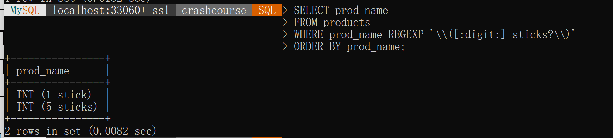
sticks匹配stick和sticks（s之后的?使得s可选，匹配0次或1次出现）。
[:digit:]匹配任意数字，因而它为数字的一个集合。{4}确切地要求它前面的字符（任意数字）出现4次，所以[[:digit:]]{4}匹配连在一起的任意4位数字。
- 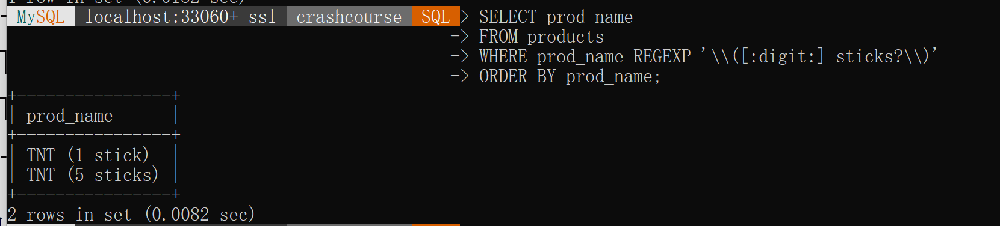
定位符
匹配特定位置的文本，需要使用定位符。
^有两种用法。- 在集合中用来否定该集合。
- 否则用来指定串的开始。
LIKE匹配整个串而REGEXP匹配子串。- 利用定位符，用
^开始每个表达式，用$结束每个表达式，可以使得REGEXP和LIKE的作用一样。
- 利用定位符，用
- 可以不使用数据库表的请款你改下使用
SELECT来测试正则表达式。- 如，
SELECT 'hello' REGEXP '[0-9]';
- 如，
第10章 创建计算字段
计算字段
- 存储在数据库表中的数据一般不是应用程序所需要的格式。
- 计算字段是运行时，在
SELECT语句内创建的。- 基本上与column的意思相同。
- 只有数据库知道
SELECT语句中哪些列是实际的表列，哪些是计算字段。
- SQL语句内完成的许多转换和格式化工作都可以直接在客户机应用程序内完成。
- 一般来说，在数据库服务器上完成这些操作比在客户机中更快。
拼接字段
在MySQL的
SELECT语句中，使用Concat()函数将两个列拼接起来。- 多数的DBMS使用
+或||来实现拼接。 - 可以拼接多个串，串之间使用逗号
,隔开。
- 多数的DBMS使用
使用
RTrim()函数删除数据右侧多余的空格。使用
LTrim()删除串左边的空格。使用
Trim()删除串左右两边的空格。
使用别名
使用别名是字段或是值的替换名。
使用
AS关键字赋予别名。别名还有其他用途。
- 如，实际的表列名不符合规定的字符（如空格）时重新命名它。
- 别名有时候也称为导出列。
执行算术计算
利用计算字段，对检索出的数据进行算术计算。
MySQL支持基本算术操作符。可以使用圆括号
()来区分优先级。
SELECT提供了测试和试验函数与计算的一个很好的方法。
第11章 使用数据处理函数
函数
- 函数在数据上执行，给数据的转换和处理提供了方便。
使用函数
- 大多数SQL支持的函数类型：
- 处理文本
- 算术操作
- 处理日期和时间值
- 返回DBMS正在使用的特殊信息的系统函数。
文本处理函数
使用
Upper()函数将文本转化为大写。常用的文本处理函数
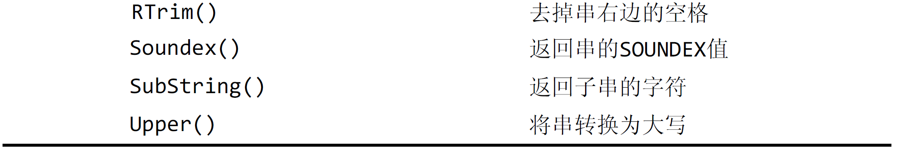
SOUNDEX是一个将任何文本串转换为描述其语音表示的字母数字模式的算法。SOUNDEX不是SQL概念，MySQL（和多数DBMS）都提供支持。- 使用
SOUNDEX()函数进行搜索，它匹配所有发音类似的结果。
- 使用
日期和时间处理函数
常用的日期和时间处理函数。
- MySQL使用的日期格式必须是
yyyy-mm-dd。
使用
Date()函数，Date(order_date)指示MySQL仅提取列的日期部分。使用
Time()函数，仅提取列的时间部分。- 使用
BETWEEN操作符匹配日期范围。或者使用更简洁的方式，利用Year()和Month()函数提取年月。
数值处理函数
- 数值处理函数仅处理数值数据。
- 数值处理函数没有串或日期-时间处理函数的使用那么频繁。
- 常用的数值处理函数。
- 使用
第12章 汇总数据
聚集函数
- MySQL提供了5个聚集函数。
- 聚集函数：运行在行组上，计算和返回单个数值。
- MySQL还支持一系列的标准偏差聚集函数。
AVG()函数
使用
AVG()函数返回所有列的平均值，或是特定行或列的平均值。- 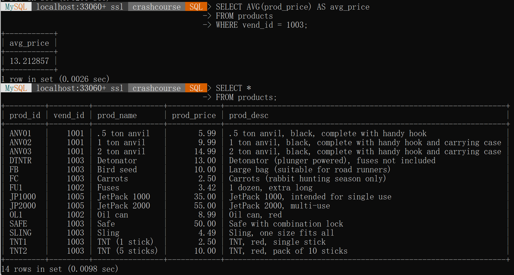
- 使用
WHERE子句过滤特定的行。
- 使用
- 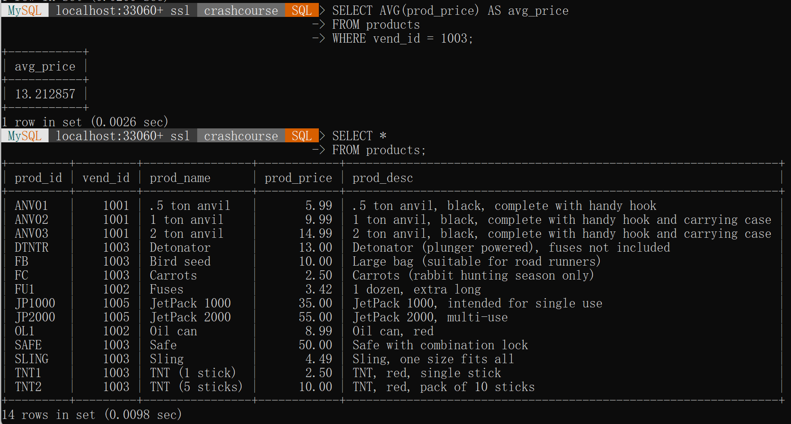
AVG()只能用来确定特定数值列的平均值，且列名必须作为函数参数给出。要获得多个列的平均值，必须使用多个
AVG()函数。
AVG()函数忽略列值为NULL的行。
COUNT()函数
- 使用
COUNT()函数技术表中行的数目或是符合特定条件的行的数目。
COUNT()两种使用方式：- 使用
COUNT(*)- 对表中行的数目进行计数，不管列中是否包含
NULL值。
- 对表中行的数目进行计数，不管列中是否包含
- 使用
COUNT(column)- 对特定列中具有值的行进行计数，忽略
NULL值。
- 对特定列中具有值的行进行计数，忽略
- 使用
MAX()函数
- 使用
MAX()函数返回指定列中的最大值。MAX()必须指定列名。
MAX()一般用来找出最大的数值或日期值。- MySQL允许将
MAX()用来返回任意列的最大值。- 包括文本列中的最大值。
MAX()忽略列值为NULL的行。
MIN()函数
- 与
MAX()函数正好功能相反。- 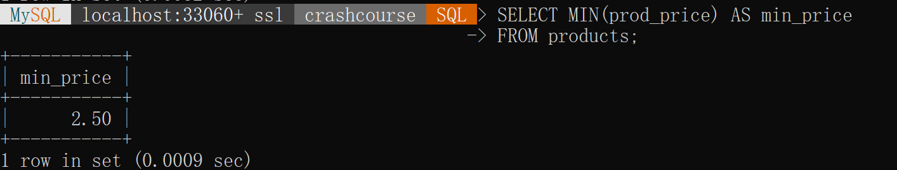
- MySQL允许将
MIN()用来返回任意列的最小值。- 包括文本列中的最小值。
MIN()忽略列值为NULL的行。
SUM()函数
- 使用
SUM()函数来返回指定列值的和（总计）。
SUM()也可以用来合计计算值。- 利用标准的算术操作符，所有的聚集函数都可以用来执行多个列上的计算。
- 如上例所示。
SUM(item_price*quantity)返回订单中所有物品价钱之和。
- 如上例所示。

SUM()函数忽略值为NULL的行。
聚集不同值
- 对于5个聚集函数都可以如下使用：
- 对所有的行指定操作
- 指定
ALL参数或不给参数（ALL是默认行为）。
- 指定
- 只包含不同的值，指定
DISTINCT参数。
- 对所有的行指定操作
ALL参数是默认行为，不需要指定。- 如果不指定
DISTINCT，则假定为ALL。
- 使用
DISTINCT之后，具有相同价格的物品只留下一个。
- 使用
- 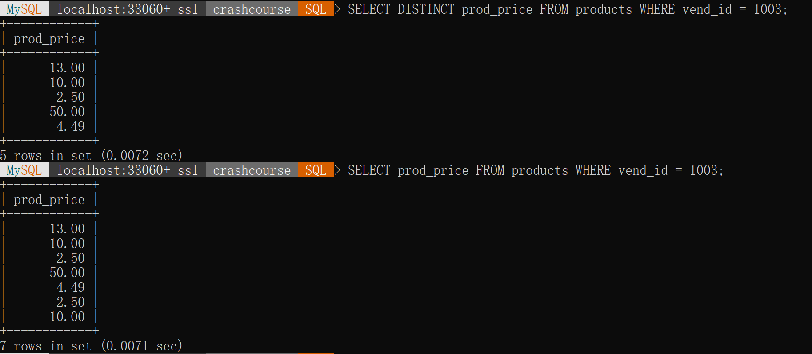
- 如果指定列名，则
DISTINCT只能用于COUNT()。DISTINCT不能用于COUNT(*)，因此不允许使用COUNT(DISTINCT)。 DISTINCT必须使用列名，不能用于计算或表达式。
组合聚集函数
SELECT语句可根据需要包含多个聚集函数。- 指定别名更便于理解和使用。
第13章 分组数据
数据分组
- 分组允许把数据分为多个逻辑组，以便能对每个组进行聚集计算。
创建分组
- 分组是使用
SELECT语句的GROUP BY子句中建立的。GROUP BY子句指示MySQL按vend_id排序并分组数据。- 这导致对每个
vend_id而不是整个表计算num_prods一次。
GROUP BY子句指示MySQL分组数据，然后对每个组而不是整个结果集进行聚集。- 一些重要的规定。
GROUP BY子句可以包含任意数目的列。- 如果在
GROUP BY子句中嵌套了分组，数据将在最后规定的分组上进行汇总。 GROUP BY子句中列出的每个列都必须是检索列或是有效的表达式（不能是聚集函数）。如果在SELECT中使用表达式，则必须在GROUP BY子句中指定相同的表达式。不能使用别名。- 除聚集计算语句外，
SELECT语句中的每个列都必须在GROUP BY子句中给出。 - 分组列中具有
NULL值，则NULL将作为一个分组返回。若列中有多行NULL值，则将其都作为一组。 GROUP BY子句必须出现在WHERE子句之后，ORDER BY子句之前。
使用
WITH ROLLUP关键字，得到每个分组以及每个分组汇总级别（针对每个分组）的值。
过滤分组
WHERE过滤的是行而不是分组。WHERE并没有分组的概念。
- 使用
HAVING子句过滤分组。HAVING支持所有WHERE操作符
WHERE实在数据分组前进行过滤，HAVING在数据分组后进行过滤。
分组和排序
GROUP BY和ORDER BY的区别。
- 一般使用
GROUP BY子句的时候，也应该给出ORDER BY子句。- 这是保证数据正确排序的唯一方法。
- 不要依赖
GROUP BY排序数据。
SELECT子句顺序
- 在
SELECT语句中必须遵循的次序。
第14章 使用子查询
子查询
- 任何SQL语句都是查询。
- 子查询，即嵌套在其他查询中的查询。
利用子查询进行过滤
可以讲一条
SELECT语句返回的结果用于另一条SELECT语句的WHERE子句。组合两个查询为一个。
SELECT语句中，子查询总是由内向外处理。- 先处理子查询，再将子查询的结果作为
WHERE的条件
- 先处理子查询，再将子查询的结果作为
合并三个子查询
在
WHERE子句中使用子查询，应当保证SELECT语句具有与WHERE子句中相同数目的列。- 通常单个列与单个列匹配。
- 如果需要可以使用多个列。
子查询一般与
IN操作符结合使用，但也可以用于测试等于=、不等于<>等。
作为计算字段使用子查询
- 使用子查询创建计算字段。
orders是一个计算字段，是由圆括号中的子查询建立的。该子查询对检索出的每个客户执行一次。- 子查询中的
WHERE子句使用了完全限定列名。
- 涉及外部查询的子查询成为相关子查询。
- 如上例的查询。
- 任何时候只要列名可能有多义性的时候，必须使用这种语法（完全限定列名）。
第15章 联结表
联结
- SQL最强大的功能之一：数据检索查询的执行中联结表。
- 联结是利用SQL的
SELECT能执行的最重要的操作。
- 联结是利用SQL的
关系表
- 相同数据出现多次决不是一件好事，该因素是关系数据库设计的基础。
- 关系表的实际就是要保证把信息分解成多个表，一类数据一个表。
- 各表通过某些常用的值（即关系涉及中的关系）互相关联。
- 主键可以唯一表示一行。
- 外键为某个表中的一列，包含另一个表的主键值。
- 可伸缩性（scale）：可以适应不断增加的工作量而不失败。
为什么要使用联结
- 分解数据为多个表能够更有效地存储，更方便地处理，并且具有更大的可伸缩性。
- 但是好处是有代价的。
- 将数据存储在多个表中，需要使用联结才能在单条
SELECT语句检索出数据。
- 联结是一种机制，用来在一条
SELECT语句中关联表，因此称之为联结。- 使用特殊的语法，可以联结多个返回一组输出，联结在运行时关联表中正确的行。
- 联结不是物理实体，在实际的数据库表中不存在。
- 联结由MySQL根据需要建立，它存在于查询的执行当中。
- 需要在表的定义中指定主键和外键来维护引用完整性。
创建联结
- 创建联结非常简单，规定要联结的所有表以及如何关联即可。
- 为了匹配来自不同表中的两个列，需要使用完全限定名。
WHERE子句的重要性
- 利用
WHERE子句建立联结关系。WHERE子句作为过滤条件，它只包含那些匹配给定条件（联结条件）的行。
- 如果不使用
WHERE子句（没有联结条件的表关系）返回的结果是笛卡尔积。
- 应当保证所有的联结都有
WHERE子句。
内部联结
- 目前所用的都是等值联结。
- 基于两个表之间的相等测试。
- 也成为内部联结。
- 可以使用稍微不同的语法来明确联结的类型。
- 用
INNER JOIN指定表，使用ON子句给定条件。
- 用
- ANSI SQL首选
INNER JOIN语法。
联结多个表
- SQL对一条
SELECT语句中可以联结的表的数目没有限制。- 创建联结的规则基本相同。首先列出表，再定义表之间的关系。
第16章 创建高级联结
使用表别名
- SQL允许给表取别名。
- 表别名只在查询执行中使用。
使用不同类型的联结
自联结
- 能在单条
SELECT语句中不止一次引用相同的表。

自然联结
- 自然联结排除多次出现，使得每个列只返回一次。
- 自然联结中，只能选择那些唯一的列。
- 一般是通过对表使用通配符（
SELECT *），对所有其他表的列使用明确的子集来完成。
- 一般是通过对表使用通配符（
外部联结
- 联结包含了那些在相关表中没有关联的行，称为外部联结。
- 内部联结
INNER JOIN。 - 外部联结
OUTER JOIN。必须指定是LEFT OUTER JOIN还是RIGHT OUTER JOIN。- 上面的例子使用
LEFT OUTER JOIN从FROM子句的左边表（customers表）中选择所有行。 - 为了从右边的表中选择所有行，应该使用
RIGHT OUTER JOIN。
- 上面的例子使用
使用带聚集函数的联结
- 聚集函数可以和联结一起使用。

第17章 组合查询
组合查询
- MySQL允许执行多个查询（多条
SELECT语句），并将结果作为单个查询结果集返回。这种组合查询称为并或是复合查询。
创建组合查询
- 使用
UNION操作符来组合数条SQL查询。
使用UNION
- 给出每条
SELECT语句，在各条语句之间放上关键字UNION。UNION指示MySQL执行两条SELECT语句，并把输出组合成单个查询结果集。
UNION规则
- 必须两条或是两条以上的
SELECT语句组成，语句之间使用UNION分隔。 UNION中的每个查询必须包含相同的列、表达式或聚集函数。- 每个列不需要以相同的次序列出。
- 列的数据类型必须兼容。不必完全相同，但必须是DBMS可以隐含地转换的类型。
包含或取消重复的行
UNION从查询结果集中自动去除了重复的行。- 与单条
SELECT语句使用多个WHERE子句条件一样。
- 与单条
使用
UNION ALL返回所有匹配行。使用
UNION ALL，MySQL不取消重复的行。
对组合查询结果排序
使用
UNION组合查询时，只能使用一条ORDER BY子句，并且必须出现在最后一条SELECT语句之后。- 对于结果集，不存在用一种方式排序一部分，而又用另一种方式排序另一 部分的情况，因此不允许使用多条
ORDER BY子句。 - 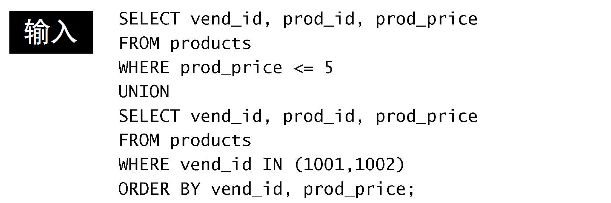
- 对于结果集，不存在用一种方式排序一部分，而又用另一种方式排序另一 部分的情况，因此不允许使用多条
第18章 全文本搜索
理解全文本搜索
- 最常使用的两个引擎MyISAM和InnoDB。
- 前者支持全文本搜索。
- 后者不支持。
- 使用全文本搜索时，MySQL不需要分别查看每个行，不需要分别分析和处理每个词。
使用全文本搜索
- 为了进行全文本搜索，必须索引被搜索的列，而且要随着数据的改变不断地重新索引。
- 在对表列进行适当设计后，MySQL会自动进行所有的索引和重新索引。
启用全文本搜索支持
- 一般在创建表时启动全文本搜索。
CREATE TABLE语句接收FULLTEXT子句，给出被索引列。
- 定义之后，MySQL自动维护该索引。
- 可以在创建表时指定
FULLTEXT，或者在稍后指定。 - 不要在导入数据的时候使用
FULLTEXT。慢。
进行全文本搜索
- 在索引之后，使用函数
Match()和Against()执行全文本搜索。Match()指定被搜索的列。Against()指定要使用的搜索表达式。- 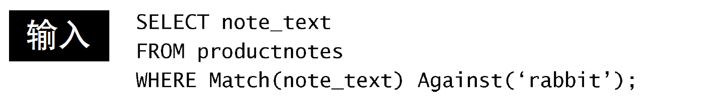
- 传递给
Match()的值必须与FULLTEXT()定义中的相同。- 指定多个列，必须列出它们，并且次序正确。
- 全文本搜索不区分大小写。除非使用
BINARY方式。
- 使用全文本搜索返回以文本匹配的良好程度排序的数据。
- 具有较高登记的行先返回。
- 如，两个行都包含词rabbit，但包含词rabbit作为第3个词的行的等级比作为第20个词的行高。
- 等级由MySQL根据行中词的数目、唯一词的数目、整个索引中词的总数以及包含该词的行的数目计算出来。
- 具有较高登记的行先返回。
使用查询扩展
- 查询扩展用来设法放宽返回的文本搜索结果的范围。
- 利用查询扩展，能找出可能相关的结果，即使它们并不精确包含所查找的词。
- 查询扩展极大地增加了返回地行数。
- 表中地行越多（行中地文本越多），使用查询扩展返回的结果越好。
布尔文本搜索
- 全文本搜索的另一种形式。布尔方式。
- 即使没有
FULLTEXT索引也可以使用布尔方式。
- 全文本搜索布尔操作符。
-排除一个词。*阶段操作符。可以想象为词尾的一个通配符。
全文本搜索的使用说明
- 在索引全文本数据时，短语被忽略且从索引中排除。
- MySQL带有一个内建的非用词列表，这些词在索引全文本数据时总是被忽略。
- 50%规则。如果一个词出现在50%以上的行中，则将它作为一个非用词忽略。
- 表中的行数小于3行，则全文本搜索不返回结果。
- 忽略词中的单引号。
- 不具有词分隔符（包括日语和汉语）的语言不能恰当地返回全文本搜索结果。
- 仅在MyISAM数据库引擎中支持全文本搜索。
第19章 插入数据
数据插入
SELECT是最常使用的SQL语句。- 其余三个语句。首先就是
INSERT。
INSERT用来插入（或添加）行到数据库表的。- 可以插入：
- 完整行
- 行的一部分
- 多行
- 某些查询结果。
- 可以插入：
可针对每个表或是每个用户，利用MySQL的安全机制禁止使用
INSERT语句。
插入完整的行
INSERT INTO table_name VALUES(attribute...);INSERT语句一般不会产生输出。
- 存储到表中每个列的数据必须在
VALUES子句中给出，对每个列必须提供一个值。- 如果没有值，应该使用
NULL。 - 每个列必须以在表定义中出现的次序填充。
- 第一列也为
NULL。MySQL每次插入一个新行时，该列由MySQL自动增量。
- 如果没有值，应该使用
- 语法简单。不安全。尽量避免使用。
- 编写依赖特定列次序的SQL语句是不安全的。
可以显示提供列名。但是繁琐。
因为提供了列名，
VALUES必须以其指定的次序匹配指定的列名，不一定按各个列出现在实际表中的次序。即使表的结构改变，此
INSERT语句仍然能正确工作。
- 一般不要使用没有明确给出列的列表的
INSERT语句。- 使用这种语法，还可以省略列。这表示可以只给某些列提供值，给其他列不提供值。
- 省略列必须满足的条件。
- 允许
NULL值（无值或空值）。 - 表定义中给出默认值。
- 允许
INSERT操作可能很耗时，而且可能降低等待处理的SELECT语句的性能。- 可以通过在
INSERT和INTO之间添加关键字LOW_PRIORITY，指示MySQL降低INSERT语句的优先级。INSERT LOW_PRIORITY INTO。- 同样适用于接下来介绍的
UPDATE和DELETE语句。
- 可以通过在
插入多个行
可以使用多条INSERT语句，甚至一次提交它们，每条语句用一个分号结束。
只要每条INSERT语句中的列名（和次序）相同。合并语句。
-
- 其中单条
INSERT语句有多组值，每组值用一对圆括号括起来，用逗号分隔。
- 其中单条
-
- MySQL用单条
INSERT语句处理多个插入比使用多条INSERT语句快。
插入检索出的数据
INSERT TNTO table_name(attribute...) SELECT ...- 在
INSERT SELECT中，SELECT语句可包含WHERE子句以过滤插入的数据。
第20章 更新和删除数据
更新数据
- 使用
UPDATE语句更新（修改）表中的数据。两种方式使用UPDATE：- 更新表中特定行。
- 更新表中所有行。
- 不要省略
WHERE子句。稍不注意就会更新表中的所有行。
UPDATE语句使用:- ```sql
UPDATE table_name
SET attribute_name = ‘new value’
WHERE attribute_name = ‘target row’;1
2
3
4
5
6
7
8
9
10
11
12
13
14
15
16
17
18
19
20
21
22
23
24
- 
- `UPDATE`语句总是以要更新的表的名字开始。
- `SET`命令用来将新值赋给被更新的列。
- `UPDATE`语句以`WHERE`子句结束，它告诉MySQL更新哪一行。
- 更新多个列：
- 
- 在`UPDATE`语句中可以使用子查询。能使用`SELECT`语句检索出的数据更新列数据。
- 使用`IGNORE`关键字可以指定MySQL即使在更新这些行中的一行或是多行时出现一个错误，也继续更新。
- ```sql
UPDATE IGNORE table_name...
- ```sql
- 删除某个列的值，可以设置它为
NULL（假如表定义允许NULL值）。
删除数据
- 从表中删除（去掉）数据，使用
DELETE语句。两种使用方式：- 从表中删除特定行。
- 从表中删除所有行。
- 同样需要注意
WHERE子句不要省略。
删除一行。
```sql
DELETE FROM table_name
WHERE attribute = ‘target value’;1
2
3
4
5
6
7
8
9
10
11
12
13
14
15
16
17
18
19
20
21
22
23
24
25
26
27
28
29
30
31
32
33
34
35
36
37
38
39
40
41
42
43
44
45
46
47
48
49
50
51
52
53
54
55
56
57
58
59
60
61
62
63
64
65
66
67
68
69
70
71
72
73
74
75
76
77
- 
- `DELETE`不需要列名或通配符。
- `DELETE`删除整行。
- 删除指定列使用`UPDATE`语句。
- `DELETE`删除表的内容，而没有删除表本身。
- 优先使用`TRUNCATE TABLE`语句，来更快地删除表中地所有行。
- `TRUNCATE`实际是删除原来的表并重新创建一个表。不是逐行删除表中的数据。
## 更新和删除的知道原则
- 除非确实打算更新和删除所有行。否则一定带`WHERE`子句。
- 保证每个表都有主键。
- 使用`UPDATE`或`DELETE`语句使用子句`WHERE`子句前，应该先使用`SELECT`进行行测试。
- 使用强制实施引用完整性的数据库。
- MySQL不允许删除具有与其他表相关联的数据的行。
- 需要非常小心使用`UPDATE`和`DELETE`，因为MySQL没有撤销。
# 第21章 创建和操纵表
## 创建表
- MySQL还可以来执行数据库和表的所有操作。包括表本身的创建和处理。
- 创建表的方法：
- 使用交互式创建和管理表的工具。
- 直接使用MySQL语句操纵。
- 使用MySQL的`CREATE TABLE`语句创建表。
- 使用交互式工具时，实际上使用的也是MySQL语句，只是不是用户编写二十界面工具自动生成并执行相应的MySQL语句。
### 创建表的基础
- 使用`CREATE TABLE`创建表，必须提供的信息
- 新表的名字，`CREATE TABLE new_table_name`。
- 表列的名字和定义，逗号隔开。
- `CREATE TABLE`语句可能包括其他关键字或选项，但至少包括表的名字和列的细节。
- ```sql
CREATE TABLE new_table
(
atrritbute data_type other_key_words,
atrritbute data_type other_key_words,
atrritbute data_type other_key_words
PRIMARY KEY(atrribute(s))
) ENGINE = InnoDB (or MYISAM);
- 语句格式化。
- MySQL语句中忽略空格。
- 尽量采用某种缩进格式。方便阅读。
- 创建信新表的时候，指定的表明必须是不存在的，否则出错。
- 不能简单使用创建表语句覆盖已有表。
- 应该手动删除该表。
- 然后再重建。
- 如果仅想在一个表不存在时创建它，应该在表名之后给出
IF NOT EXIST关键字。
使用NULL值
NULL值就是没有值或缺值。- 允许
NULL值的列允许在插入行时不给出该列的值。 - 不允许
NULL值的列不接受该列没有值的行。在插入或更新的时候，该列必须有值。
- 允许
每个表列是
NULL列或是NOT NULL列，是在创建时由表的定义规定的。NULL为默认设置，如果不指定NOT NULL，则认为指定的是NULL。
NULL是没有值，不是空串。- 空串
''在NOT NULL列中是允许的。空串是一个有效的值。
主键再介绍
- 主键值必须唯一。
- 如果使用多个列，则这些列的组合值必须唯一。
使用
CREATE TABLE指定主键。```sql
PRIMARY KEY (attribute)PRIMARY KEY (attribute1, attribute2,…)
1
2
3
4
5
6
7
8
9
10
11
12
13
14
15
16
17
18
19
20
21
22
23
24
25
26
27
28
29
30
31
32
33
- 主键可以在创建表时定义，或者创建表之后定义。
- 主键中只能使用不允许`NULL`值的列。允许`NULL`值的列不能作为唯一标识。
### 使用`AUTO_INCREMENT`
- `AUTO_INCREMENT`告诉MySQL，本列应当增加一行时自动增量。
- 每个表只允许一个`AUTO_INCREMENT`列，而且它必须被索引。
- 覆盖`AUTO_INCREMENT`。
- 可以简单地在`INSERT`语句中指定一个值，只要它唯一即可，该值就可以被用来替代自动生成的值。
- 后续增量将开始使用该手工插入的值。
- 确定`AUTO_INCREMENT`值。
- 使用`last_insert_id()`函数获得这个值。
- ```sql
SELECT last_insert_id()- 此语句返回最后一个
AUTO_INCREMENT值，然后可以将它用于后续的MySQL语句。
- 此语句返回最后一个
指定默认值
- 如果在插入行的时候没有给出值，MySQL允许指定此时使用的默认值。
默认值使用
CREATE TABLE语句的列定义中的DEFAULT关键字指定。```sql
CREATE TABLE new_table
(attribute1 data_type [IS NULL | NOT NULL] DEFAULT default_value, attribute2 data_type [IS NULL | NOT NULL] DEFAULT default_value, ... attributex data_type [IS NULL | NOT NULL] DEFAULT default_value, PRIMARY KEY (...)) ENGINE = InnoDB;
1
2
3
4
5
6
7
8
9
10
11
12
13
14
15
16
17
18
19
20
21
22
23
24
25
26
27
28
29
30
31
32
33
34
35
36
37
38
39
40
41
42
43
44
45
46
47
48
49
50
51
52
53
54
55
56
57
58
59
60
61
62
63
64
65
66
67
68
69
70
71
72
73
74
75
76
77
78
79
80
81
82
83
84
85
86
- 
- 在此例子中，给该列的描述添加文本`DEFAULT 1`指示MySQL，在未给出数量的情况下使用数量`1`。
- 与大多数DBMS不一样，MySQL不允许使用函数作为默认值，只支持常量。
- 使用默认值而不是`NULL`值。
### 引擎类型
- 与其他DBMS一样，MySQL有一个具体管理和处理数据的内部引擎。
- 多种引擎有各自不同的功能和特性，为不同的任务选择正确的引擎能获得良好的功能和灵活性。
- 可以忽略引擎，省略`ENGINE=语句`，使用默认引擎。
- 很可能是`MyISAM`，多数SQL语句默认使用它。但不是所有语句都默认使用它。
- 需要知道的三个引擎：
- `InnoDB`：
- 可靠的事务处理引擎。
- 不支持全文本搜搜。
- `MEMORY`：
- 功能等同于`MyISAM`。
- 但由于数据存储在内存而不是磁盘，速度很快。特别适合于临时表。
- `MyISAM`：
- 性能极高的引擎。支持全文本搜索。
- 不支持事务处理。
- 引擎可以混用。
- 外键不能跨引擎。
- 外键（用于强制实施引用完整性）不能跨引擎，即使用一个引擎的表不能引用具有使用不同引擎的表的外键。
## 更新表
- 为了更新表定义，使用`ALTER TABLE`语句。
- 使用`ALTER TABLE`更改表结构，必须给出下面的信息：
- `ALTER TABLE`之后必须要给出要更改的表名（该表必须存在，否则出错）。
- 所做更改的列表。
- 
- 
- `ALTER TABLE`的一种常见用途是定义外键。
- 
- 为了对单个表进行多个更改，可以使用单条`ALTER TABLE`语句，每个更改用逗号分隔。
- 复杂的表结构更改一般需要手动删除过程。
- 小心使用`ALTER TABLE`，应该在进行改动前做一个完整的备份（模式和数据的备份）。
- 数据库表的更改不能撤销。
## 删除表
- 删除整个表（不是其内容）使用`DROP TABLE`语句。
- ```sql
DROP TABLE table_to_be_droped;
重命名表
使用
RENAME TABLE语句可以重命名一个表。RENAME TABLE old_table TO new_table;
第22章 使用视图
视图
- 视图是虚拟的表。
- 视图只包含使用时动态检索数据的查询。
为什么使用视图
- 视图仅仅是用来查看存储在别处的数据的一种设施。
- 视图本身不包含数据，因此它们返回的数据是从其他表中检索出来的。
- 添加或更改这些表中的数据时，视图将返回改变过的数据。
- 视图不包含数据，所以每次使用视图时都必须处理查询执行时所需的任一检索。
视图的规则和限制
- 视图命名必须唯一。
- 可创建的视图数目没有限制。
- 必须有足够的访问权限才能创建视图。
- 视图可以嵌套。
ORDER BY1可以用在视图中。- 视图检索数据
SELECT中也含有的ORDER BY将被覆盖。
- 视图检索数据
- 视图不能索引，也不能有关联的触发器和默认值。
- 视图可以和表一起使用。
使用视图
- 使用
CREATE VIEW语句创建视图。 - 使用
SHOW CREATE VIEW viewname来查看创建视图的语句。 - 使用
DROP VIEW viewname删除视图。 - 更新视图。
- 可以先
DROP再用CREATE。 - 也可以直接用
CREATE OR REPLACE VIEW。- 如果更新的视图不存在，则创建一个视图。
- 如果更新的视图存在则替换原有视图。
- 可以先
利用视图简化复杂的联结
- 视图最常见的应用之一就是隐藏复杂的SQL，通常涉及联结。
- 视图极大地简化了复杂SQL语句的使用。
- 利用视图，可以一次性编写基础的SQL，然后根据需要多次使用。
- 创建可重用的视图。
- 扩展视图的范围可以不仅使得它能被重用，而且甚至更有用。
用视图重新格式化检索出的数据
- 视图的另一个常见用途：重新格式化检索出的数据。
使用视图过滤不想要的数据
- 视图对于应用普通的
WHERE子句也很有用。
- 视图中的
WHERE子句和传递给视图的WHERE子句将自动组合。
使用视图与计算字段
- 视图对于简化计算字段的使用特别有用。
更新视图
- 通常视图是可更新的（对其可以使用
INSERT、UPDATE、DELETE）。 - 更新一个视图将更新其基表。
- 如果对视图增加或是删除行，实际上实对其基表增加或删除行。
- 如果MySQL不能正确地确定被更新的基数据，则不允许更新（包括插入和删除）。
- 即有以下操作地，不能进行视图的更新：
- 分组（使用
GROUP BY和HAVING） - 联结
- 子查询
- 并
- 聚集函数（
Min()、Count()、Sum()等）； DISTINCT- 导出（计算）列
- 分组（使用
- 视图主要用于数据检索。
第23章 使用存储过程
存储过程
- 一个完整的操作需要多条语句才能完成。
- 需要执行的具体语句及其次序也不是固定的。
- 创建存储过程。
- 简单来说，存储过程就是为以后使用而保存的一条或多条MySQL语句的集合。
- 可以单独编写每条语句，并根据结果有条件地执行另外的语句。
为什么要使用存储过程
- 通过封装，简化复杂操作。
- 不要求反复简历一系列处理步骤，保证了数据完整性。
- 简化变动的管理。
- 安全性。
- 提高性能，使用存储过程比使用单独的SQL语句快。
- 存在只能在单个请求中的MySQL和特性，存储过程可以编写更强更灵活的代码。
缺点。
- 编写存储过程更复杂。
- 可能没有创建存储过程的安全访问权限。
MySQL将编写存储过程的安全和访问，与执行存储过程的安全与访问区分开来。
- 不能编写存储过程，但依然可以使用存储过程。
使用存储过程
执行存储过程
- MySQL称存储过程的执行为调用。
- MySQL执行存储过程的语句为
CALL。 CALL接受存储过程的名字以及需要传递给它的任意参数。
- MySQL执行存储过程的语句为
创建存储过程
- 一个返回产品平均价格的存储过程的例子。
- 在MySQL处理这段代码时，它创建一个新的存储过程productpricing。
- 没有返回数据，因为这段代码并未调用存储过程，这里只是为以后使用而创建它。
- 默认的MySQL语句分隔符为
;。 - 使用
DELIMITER更改命令行实用程序的语句分隔符。- 其中，
DELIMITER //告诉命令行实用程序使用//作为新的语句结束分隔符，可以看到标志存储过程结束的END定义为END //而不是END; - 这样，存储过程体内的
;仍然保持不动，并且正确地传递给数据库引擎。 - 除
\符号外，任何字符都可以用作语句分隔符。 - 使用存储过程。
- 其中，

删除存储过程
- 使用
DROP PROCEDURE name_to_be_removed。- 仅当存在时删除，如果指定的过程不存在，将会产生一个错误。
- 使用
DROP PROCEDURE IF EXISTS，仅当存在时删除。
使用参数
- 一般存储过程并不显示结果，而是把结果返回给你指定的变量。
- 变量是内存中一个特定的位置，用来临时存储数据。
- 存储过程的参数允许的数据类型与表中使用的数据类型相同。
- 记录集不是允许的类型，不能通过一个参数返回多个行和列。
- 为了调用包含参数的存储过程，需要指定对应的变量名。
- MySQL所有的变量名都必须以
@开始。
- 调用的时候不显示任何数据，存储过程返回后可以显示变量。
- 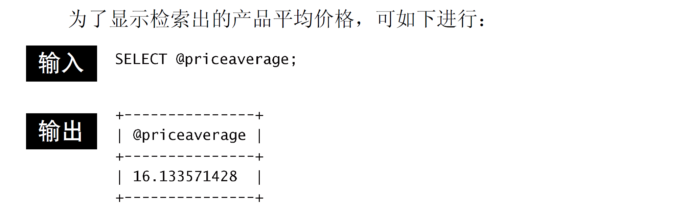
使用
IN和OUT参数的例子。
建立智能存储过程
只有存储过程内包含业务规则和智能处理时，存储过程的威力才真正显现出来。
COMMENT关键字。- 不是必需的，如果给出，将在
SHOW PROCEDURE STATUS的结果中显示。
- 不是必需的，如果给出，将在
检查存储过程
- 显示创建一个存储过程的
CREATE语句，使用SHOW CREATE PROCEDURE语句。
- 为了获得包括何时、由谁船舰等详细信息的存储过程列表，使用
SHOW PROCEDURE STATUS语句。
第24章 使用游标
游标
- MySQL检索操作返回一组称为结果集的行。
- 使用简单的
SELECT语句没有办法得到指定行。有时候需要在检索出来的行中前进或后退一行或多行。
- 使用游标。
- 游标是一个存储在MySQL服务器上的数据库查询，不是一条
SELECT语句，而是被该语句检索出来的结果集。 - 在存储了游标之后，应用程序可以根据需要滚动或浏览其中的数据。
- 游标主要用于交互式应用。
- 其中用户需要滚动屏幕上的数据，并对数据进行浏览或做出更改。
- 游标是一个存储在MySQL服务器上的数据库查询，不是一条
- MySQL游标只能用于存储过程。
使用游标
- 使用游标涉及几个明确的步骤。
- 使用游标前必须声明（定义）它。
- 这个过程没有检索数据，只是定义要使用的
SELECT语句。
- 这个过程没有检索数据，只是定义要使用的
- 一旦声明后，必须打开游标以供使用。
- 用前面定义的
SELECT语句把数据实际检索出来。
- 用前面定义的
- 对于填有数据的游标，根据需要取出（检索）各行。
- 在结束游标使用时，必须关闭游标。
- 使用游标前必须声明（定义）它。
- 声明游标后，可以根据需要频繁打开和关闭游标。
- 打开游标后，可根据需求频繁执行取操作。
创建游标
- 游标使用
DECLARE语句创建。DECLARE命名游标，并定义相应的SELECT语句，根据需要带WHERE和其他子句。
- 定义游标之后，可以打开它。
打开和关闭游标
- 使用
OPEN cursor打开游标。
使用完成后使用
CLOSE cursor语句来关闭游标。- 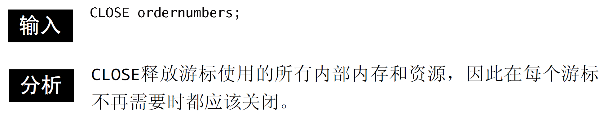
- 游标关闭之后，如果没有重新打开则不能使用。
- 声明过的游标不需要再次声明，用
OPEN语句打开就可以了。
- 隐含关闭。
- 如果不明确关闭游标，MySQL将会在到达
END语句时自动关闭它。
- 如果不明确关闭游标，MySQL将会在到达
- 前面的例子。
使用游标数据
- 一个游标被打开后，可以使用
FETCH语句分别访问其每一行。 FETCH指定检索什么数据（所需的列），检索出来的数据存储在什么地方。- 它还向前移动游标中的内部行指针，使下一条
FETCH语句检索下一行（不重复读取同一行）。
- 它还向前移动游标中的内部行指针，使下一条
第25章 使用触发器
触发器
- 需要某条语句（或某些语句）在事件发生时自动执行。
- 触发器是MySQL响应以下任意语句而自动执行的一条MySQL语句（或位于
BEGIN和END之间的一组语句）：DELETEINSERTUPDATE
- 其他MySQL语句不支持触发器。
创建触发器
- 创建触发器时，需要给出4条信息：
- 触发名。唯一。
- 关联的表
- 响应的活动（
DELETE，INSERT或UPDATE） - 何时执行（处理前或处理后）。
- 使用
CREATE TRIGGER语句创建触发器。
只有表才支持触发器，视图不支持。
触发器按每个表每个事件每次地定义，每个表每个事件每次只允许一个触发器。
- 每个表最多支持6个触发器（每条
INSERT、UPDATE和DELETE的之前和之后）。 - 单一触发器不能与多个事件或多个表关联。
- 如果需要则需要定义多个触发器。
- 每个表最多支持6个触发器（每条
- 如果
BEFORE触发器失败，则不执行请求的操作。 - 如果
BEFORE触发器或语句本身失败，则不执行AFTER触发器。
删除触发器
- 使用
DROP TRIGGER语句删除触发器。
使用触发器
INSERT触发器
INSERT触发器在INSERT语句执行之前或之后进行。- 需要知道的几点。
INSERT触发器代码内，可引用一个名为NEW的虚拟表，访问被插入的行；- 在
BEFORE INSERT触发器中，NEW中的值也可以被更新（允许更改被插入的值）； - 对于
AUTO_INCREMENT列，NEW在INSERT执行之前包含0，在INSERT执行之后包含新的自动生成值。
DELETE触发器
DELETE触发器在DELETE语句执行之前或之后执行。需要知道的两点。
- 在
DELETE触发器代码内，你可以引用一个名为OLD的虚拟表，访问被删除的行； OLD中的值全都是只读的，不能更新。
- 在
UPDATE触发器
UPDATE触发器在UPDATE语句执行之前或之后执行。需要知道的几点。
- 在
UPDATE触发器代码中，你可以引用一个名为OLD的虚拟表访问以前（UPDATE语句前）的值，引用一个名为NEW的虚拟表访问新更新的值； - 在
BEFORE UPDATE触发器中，NEW中的值可能也被更新（允许更改将要用于UPDATE语句中的值）； OLD中的值全都是只读的，不能更新。
- 在
第26章 管理事务处理
事务处理
- 并非所用引擎都支持事务处理。
- MyISAM和InnoDB是两种最常使用的引擎。前者不支持明确的事务处理管理，而后者支持。
- 如果你的应用中需要事务处理功能，则一定要使用正确的引擎类型。
- 事务处理（Transaction Processing）可以用来维护数据库的完整性，它保证成批的MySQL操作用么完全执行，要么完全不执行。
- 事务处理是一种机制，用来管理必须成批执行的MySQL操作，以保证数据库不包含不完整的操作结果。
- 如果发生错误，则进行回退（撤销）以恢复数据库到某个已知且安全的状态。
- 关于事务处理需要知道的术语。
- 事务（transaction）指一组SQL语句；
- 回退（rollback）指撤销指定SQL语句的过程；
- 提交（commit）指将未存储的SQL语句结果写入数据库表；
- 保留点（savepoint）指事务处理中设置的临时占位符（placeholder），你可以对它发布回退（与回退整个事务处理不同）。
控制事务处理
管理事务处理的关键在于将SQL语句组分解为逻辑块，并明确规定数据何时应该回退，何时不应该回退。
使用
START TRANSACTION标识事务的开始。
使用ROLLBACK
- MySQL的
ROLLBACK命令用来回退（撤销）MySQL语句。

ROLLBACK只能在一个事务处理内使用（在执行一条START TRANSACTION命令之后）。
- 事务处理用来管理
INSERT、UPDATE和DELETE语句。 - 你不能回退
SELECT语句。（这样做也没有什么意义） - 你不能回退
CREATE或DROP操作。事务处理块中可以使用这两条语句，但如果你执行回退，它们不会被撤销。
使用COMMIT
一般的MySQL语句都是直接针对数据库表执行和编写的。这就是所谓的隐含提交（implicit commit），即提交（写或保存）操作是自动进行的。
在事务处理块中，提交不会隐含地进行。为进行明确的提交，使用
COMMIT语句。当
COMMIT或ROLLBACK语句执行后，事务会自动关闭（将来的更改会隐含提交）。
使用保留点
- 简单的
ROLLBACK和COMMIT语句就可以写入或撤销整个事务处理。 - 更复杂的事务处理可能需要部分提交或回退。
- 为了支持回退部分事务处理，必须能在事务处理块中合适的位置放置占位符。
- 为了创建占位符，可如下使用
SAVEPOINT语句。 - 保留点越多越好。
- 保留点在事务处理完成后自动释放，也可以使用
RELEASE SAVEPOINT明确地释放保留点。
更改默认的提交行为
- 默认的MySQL行为是自动提交所有更改。
- 任何时候你执行一条MySQL语句，该语句实际上都是针对表执行的，而且所做的更改立即生效。
- 为指示MySQL不自动提交更改，需要使用以下语句：
autocommit标志是针对每个连接而不是服务器的。
第27章 全球化和本地化
字符集和校对顺序
- 不同的语言和字符集需要以不同的方式存储和检索。
- 讨论多种语言和字符集涉及到的术语。
- 字符集为字母和符号的集合；
- 编码为某个字符集成员的内部表示；
- 校对为规定字符如何比较的指令。
使用字符集和校对顺序
- MySQL支持众多的字符集。为查看所支持的字符集完整列表，使用以下语句：
- 为了查看所支持校对的完整列表，使用以下语句。

- 通常系统管理在安装时定义一个默认的字符集和校对。
- 也可以在创建数据库时，指定默认的字符集和校对。
- 为了确定所用的字符集和校对，可以使用以下语句：
- 为了给表指定字符集和校对，可使用带子句的
CREATE TABLE：
- 一般，MySQL如下确定使用什么样的字符集和校对。
- 如果指定
CHARACTER SET和COLLATE两者，则使用这些值。 - 如果只指定
CHARACTER SET，则使用此字符集及其默认的校对（如SHOW CHARACTER SET的结果中所示）。 - 如果既不指定
CHARACTER SET，也不指定COLLATE，则使用数据库默认。
- 如果指定
- 除了能指定字符集和校对的表范围外，MySQL还允许对每个列设置它们，如下所示：
COLLATE还可以用于GROUP BY、HAVING、聚集函数、别名等。
第28章 安全管理
访问控制
- 用户应该对他们需要的数据具有适当的访问权，既不能多也不能少。
- 即你需要给用户提供他们所需的访问权，且仅提供他们所需的访问权。
- 这就是所谓的访问控制，管理访问控制需要创建和管理用户账号
- MySQL Administrator（在第2章中描述）提供了一个图形用户界面，可用来管理用户及账号权限。
- 访问控制的目的不仅仅是防止用户的恶意企图。
- 数据梦魇更为常见的是无意识错误的结果，如错打MySQL语句，在不合适的数据库中操作或其他一些用户错误。
- 应该严肃对待root登录的使用。
管理用户
- MySQL用户账号和信息存储在名为mysql的MySQL数据库中。
创建用户账户
- 为了创建一个新用户账号，使用
CREATE USER语句。IDENTIFIED BY指定的口令为纯文本，MySQL将在保存到user表之前对其进行加密。- 为了作为散列值指定口令，使用
IDENTIFIED BY PASSWORD。
- 使用
GRANT或INSERT也可以创建用户。-
GRANT语句（稍后介绍）也可以创建用户账号，但一般来说CREATE USER是最清楚和最简单的句子。 - 此外，也可以通过直接插入行到
user表来增加用户。不建议。
-
- 为重新命名一个用户账号，使用
RENAME USER语句:
删除用户账户
- 为了删除一个用户账号（以及相关的权限），使用
DROP USER语句：
设置访问权限
- 在创建用户账号后，必须接着分配访问权限。
- 新创建的用户账号没有访问权限。
- 它们能登录MySQL，但不能看到数据，不能执行任何数据库操作。
- 为看到赋予用户账号的权限，使用
SHOW GRANTS FOR：
- MySQL的权限用用户名和主机名结合定义。
- 如果不指定主机名，则使用默认的主机名%（授予用户访问权限而不管主机名）。
- 为设置权限，使用
GRANT语句。GRANT要求你至少给出以下信息：- 要授予的权限
- 被授予访问权限的数据库或表
- 用户名
GRANT的反操作为REVOKE，用它来撤销特定的权限。
GRANT和REVOKE可在几个层次上控制访问权限：
- 可以授予或撤销的每个权限。
- 在使用
GRANT和REVOKE时，用户账号必须存在，但对所涉及的对象没有这个要求。- 这允许管理员在创建数据库和表之前设计和实现安全措施。
- 可通过列出各权限并用逗号分隔，将多条
GRANT语句串在一起。
更改口令
- 为了更改用户口令，可使用
SET PASSWORD语句。新口令必须如下加密。
SET PASSWORD还可以用来设置你自己的口令：

第29章 数据库维护
备份数据
- 像所有数据一样，MySQL的数据也必须经常备份。
- 由于MySQL数据库是基于磁盘的文件，普通的备份系统和例程就能备份MySQL的数据。
- 由于这些文件总是处于打开和使用状态，普通的文件副本备份不一定总是有效。
- 可能的解决方案。
- 使用命令行实用程序
mysqldump转储所有数据库内容到某个外部文件。 - 可用命令行实用程序
mysqlhotcopy从一个数据库复制所有数据（并非所有数据库引擎都支持这个实用程序）。 - 可以使用MySQL的
BACKUP TABLE或SELECT INTO OUTFILE转储所有数据到某个外部文件。- 这两条语句都接受将要创建的系统文件名，此系统文件必须不存在，否则会出错。
- 数据可以用
RESTORE TABLE来复原。
- 使用命令行实用程序
- 为了保证所有数据被写到磁盘（包括索引数据），可能需要在进行备份前使用
FLUSH TABLES语句。
进行数据库维护
- MySQL提供了一系列的语句，可以（应该）用来保证数据库正确和正常运行。
ANALYZE TABLE，用来检查表键是否正确。CHECK TABLE用来针对许多问题对表进行检查。- 在MyISAM表上还对索引进行检查。
CHECK TABLE支持一系列的用于MyISAM表的方式。CHANGED检查自最后一次检查以来改动过的表。EXTENDED执行最彻底的检查，FAST只检查未正常关闭的表，MEDIUM检查所有被删除的链接并进行键检验，QUICK只进行快速扫描。
- 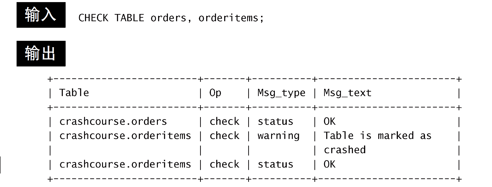
- 如果MyISAM表访问产生不正确和不一致的结果，可能需要用
REPAIR TABLE来修复相应的表。 - 如果从一个表中删除大量数据，应该使用
OPTIMIZE TABLE来收回所用的空间，从而优化表的性能。

诊断启动问题
- 在排除系统启动问题时，首先应该尽量用手动启动服务器。
- MySQL服务器自身通过在命令行上执行mysqld启动。
- 几个重要的mysqld命令行选项：
- –help
- –version显示版本信息然后退出
- –safe-mode装载减去某些最佳配置的服务器；
- –verbose显示全文本消息（为获得更详细的帮助消息与–help联合使用）；
查看日志文件
- MySQL维护管理员依赖的一系列日志文件。主要的日志文件有以下几种。
- 错误日志
- 启动和关闭问题以及任意关键错误的细节。
- 通常名为hostname.err，位于data目录中。
- 此日志名可用–log-error命令行选项更改。
- 查询日志
- 记录所有MySQL活动，在诊断问题时非常有用。
- 此日志通常名为hostname.log，位于data目录中。
- 可以用–log命令行选项更改。
- 二进制日志
- 记录更新过数据（或者可能更新过数据）的所有语句。
- 日志通常名为hostname-bin，位于data目录内。
- 此名字可以用–log-bin命令行选项更改。
- 缓慢查询日志
- 此日志记录执行缓慢的任何查询。这个日志在确定数据库何处需要优化很有用。
- 此日志通常名为hostname-slow.log， 位于data 目录中。
- 此名字可以用–log-slow-queries命令行选项更改。
- 错误日志
第30章 改善性能
改善性能
- MySQL（与所有DBMS一样）具有特定的硬件建议。
- 一般来说，关键的生产DBMS应该运行在自己的专用服务器上。
- MySQL是用一系列的默认设置预先配置的，从这些设置开始通常是很好的。但过一段时间后你可能需要调整内存分配、缓冲区大小等。
- MySQL一个多用户多线程的DBMS。如果这些任务中的某一个执行缓慢，则所有请求都会执行缓慢。
- 如果你遇到显著的性能不良，可使用
SHOW PROCESSLIST显示所有活动进程（以及它们的线程ID和执行时间）。 KILL命令终结某个特定的进程（使用这个命令需要作为管理员登录）。
- 如果你遇到显著的性能不良，可使用
- 总是有不止一种方法编写同一条SELECT语句。找出最佳的方法。
- 使用
EXPLAIN语句让MySQL解释它将如何执行一条SELECT语句。 - 一般来说，存储过程执行得比一条一条地执行其中的各条MySQL语句快。
- 使用正确的数据类型。
- 决不要检索比需求还要多的数据。换言之，不要用
SELECT *（除非你真正需要每个列）。 - 有的操作（包括INSERT）支持一个可选的DELAYED关键字，如果使用它，将把控制立即返回给调用程序，并且一旦有可能就实际执行该操作。
- 在导入数据时，应该关闭自动提交。你可能还想删除索引（包括FULLTEXT索引），然后在导入完成后再重建它们。
- 必须索引数据库表以改善数据检索的性能。
- 如果
SELECT语句中有一系列复杂的OR条件，通过使用多条SELECT语句和连接它们的UNION语句，你能看到极大的性能改进。 - 索引改善数据检索的性能，但损害数据插入、删除和更新的性能。
LIKE很慢。一般来说，最好是使用FULLTEXT而不是LIKE。- 数据库是不断变化的实体。
- 最重要的规则就是，每条规则在某些条件下都会被打破。